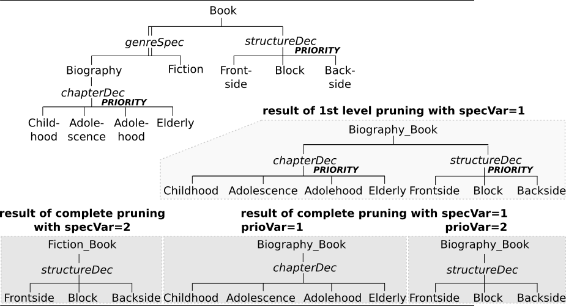

Aspect Inheritance and Priorities
Motivation
This example shows, how you can use the Priority property of Aspect and MultiAspect nodes to solve decision problems caused by Aspect Inheritance. The concept of Aspect Inheritance is shown in the figure by the SES of this example. In the following, the term Aspect is generally used for Aspects and MultiAspects, because the problem caused by inheritance is the same for both node types.
Description
Basically, such a decision problem occurs under the following two conditions.
- There is a Specialization, that has at least one Aspect Sibling.
- At least one of the Specialization's children is from type Aspect.
Aspect Inheritance
The inheritance axiom says that the parent entity and a selected child entity of a Specialization unify there names, attributes and there Aspects(!!!). That means for this example, when the Specialization node "genreSPEC" is resolved during pruning with the child entity "Biography", the entity "Book" inherits the Aspect "chapterDEC" as its next child. You can check it out by using the First-Level-Pruning operation. When you start this pruning operation you may see that there is a decision problem. The nodes "chapterDEC" and "structureDEC" are now in the same level and because they are siblings they form a decision (see figure). This kind of decision can be solved by setting the Priority property defined at Aspects.
Aspect Priorities
The Aspect Priority property has a global scope. Each Aspect that is involved in such a decision problem needs a Priority value. When Aspects are inherited, these values will be compared to each other during pruning and the Aspect with the highest priority value is chosen. If all of the values are equal, none of them is chosen. Only the Complete Pruning operation allows the evaluation of priorities. Note that, the Flattening operation also includes complete pruning.
Detect Aspect Inheritance
In large models it might be quite difficult to detect such cases on your own. That's why a feature is included that does the work for you. You find it in the menu bar "Pruning/Check/Decisions by Inheritance". It provides a list with all Aspect Siblings that exist in your SES. The icons of the aspects that are named in the selected row will change their appearance. If you use this method for this example it will only show one single row with the connected Aspects "chapterDEC" and "structureDEC".
Priority Functions
To assign values to the Priority property you have 3 options:
- You can assign fixed integer values, which means you will always select the Aspect that has the highest priority.
- If you want to specify a variable selection you can use SES Variables.
- A disadvantage of option two is, that you need one SES Variable for each Aspect. If you want to make the selection depending on only one SES Variable, you can use an SES Function.
In the example the third option is chosen. At both Aspects, "chapterDEC" and "structureDEC", the same SES Function "prioFcn(...)" is called. You can explore how it works by looking at the source code of the SES Function "prioFcn" in the SES model.